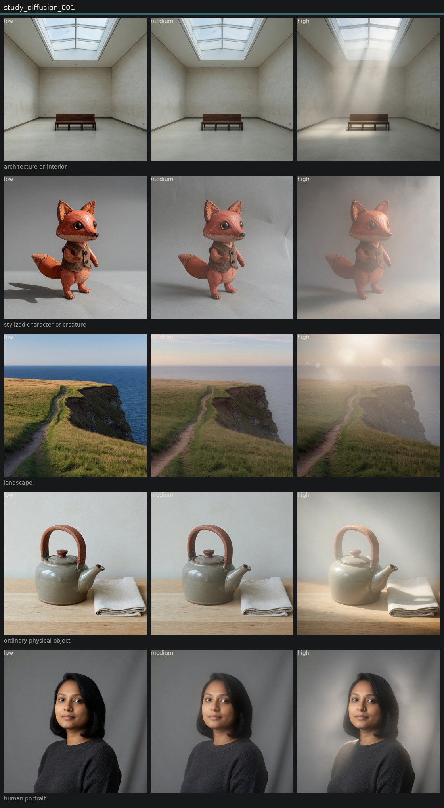

Controlled variation of diffusion
Hold subject via locked anchor images. image_edit each anchor to low, medium, and high of one candidate. Do not change other dimensions on purpose.
High diffusion adds a scattering veil while edges stay closer to the source than in optical-softness highs. Architecture and portrait isolate it best. Landscape invents a sun. Distinct enough to stay in the basis as provisional.

human portrait

low · obs_0071

medium · obs_0072

high · obs_0073
ordinary physical object

low · obs_0074

medium · obs_0075

high · obs_0076
architecture or interior

low · obs_0077

medium · obs_0078

high · obs_0079
landscape

low · obs_0080

medium · obs_0081

high · obs_0082
stylized character or creature

low · obs_0083

medium · obs_0084

high · obs_0085
Entanglement
- Often co-produces atmospheric haze and god rays.
- Landscape high adds flare orbs and a time-of-day shift.
Next
- Diffusion vs veiling glare vs atmospheric haze on the gallery and portrait only.